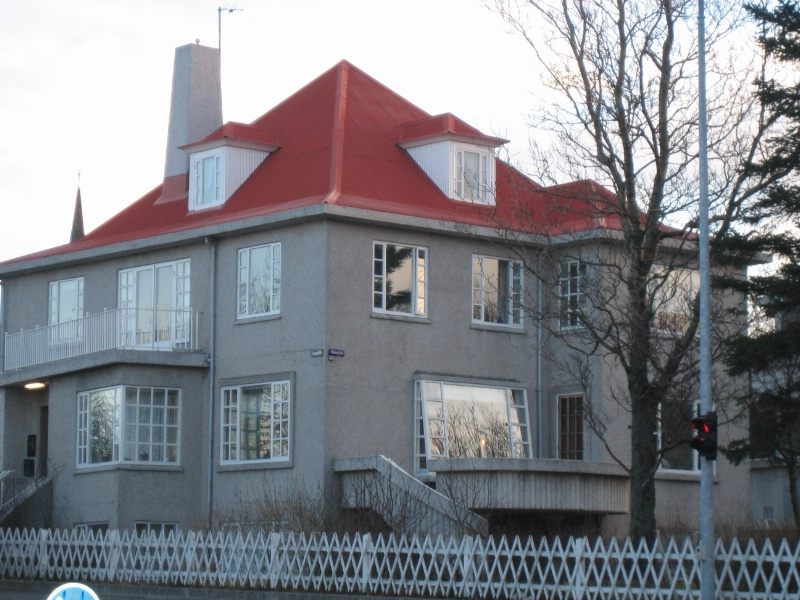

Hlíðabær er með dagþjálfun fyrir fólk sem greinst hefur með heilabilunarsjúkdóma. Opið er alla virka daga kl. 8–16.
Umsókn um dagþjálfun er send til forstöðumanns. Væntanlegum skjólstæðingi og/eða fjölskyldu hans er boðið í forviðtal þar sem starfsemin er kynnt og viðkomandi síðan boðið í heimsókn og hann hvattur til að kynna sér starfsemina áður en hann tekur ákvörðun um þjálfun.
Hlíðabær tók til starfa 22. mars 1986 og er fyrsta dagþjálfunin sem er sérstaklega ætluð þeim sem greinst hafa með heilabilunarsjúkdóma. Stjórn heimilisins er sameiginleg með Múlabæ, Ármúla 34. Rekstraraðilar eru SÍBS og RRKÍ sem eiga hvor um sig 2 fulltrúa í stjórn. 2 fulltrúar eru frá Félagi eldri borgara í Reykjavík, auk forstöðumanna beggja heimilanna og skrifstofustjóra.
Heimild er fyrir 20 manns hvern virkan dag og greiðir ríkissjóður stærstan hluta daggjaldsins en viðkomandi skjólstæðingur tekur þátt í því að hluta. Reykjavíkurborg keypti húsið að Flókagötu 53 undir starfsemina og leigir rekstraraðilum.
Í Hlíðabæ er lögð áhersla á jákvæða virkni, virðingu fyrir einstaklingnum og vellíðan bæði skjólstæðinga og starfsfólks heimilisins. Skipulögð dagskrá skiptist í þjálfun, afþreyingu og hvíld. Leitast er við að koma til móts við áhuga og hæfni hvers og eins þannig að allir fái viðfangsefni við hæfi, nýti sínar sterku hliðar og njóti þess að vera þáttakendur í starfi og leik.
Boðið er upp á baðþjónustu, lyfjaeftirlit, og aðra hjúkrunar- og læknisþjónustu eftir þörfum. Akstursþjónusta og fótsnyrting í Lönguhlíð 3 er í boði gegn gjaldi. Lögð er áhersla á góð samskipti við fjölskyldur skjólstæðinga.
Í boði er t.d.
Læknisþjónusta frá LHS Landakoti: Jón G. Snædal